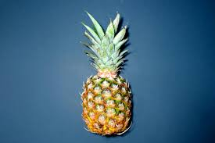

Spiritual Representation
In Goa, during the festival of Ganesh Chaturthi, the traditional canopy known as the Matoli is beautifully decorated with fruits, vegetables, herbs, and flowers. Among them, the pineapple holds a special place.
The pineapple is seen as a symbol of warmth, hospitality, and prosperity. Its unique crown-like top represents dignity and honor, making it a fitting offering to Lord Ganesha. In Matoli decorations, pineapples reflect abundance and the sweetness of life.
With its vibrant yellow color and rich taste, the pineapple is also associated with fertility, wealth, and positive energy. Including the pineapple in Matoli not only adds beauty but also emphasizes the cultural bond Goans maintain with nature and traditional harvests.
Our Students